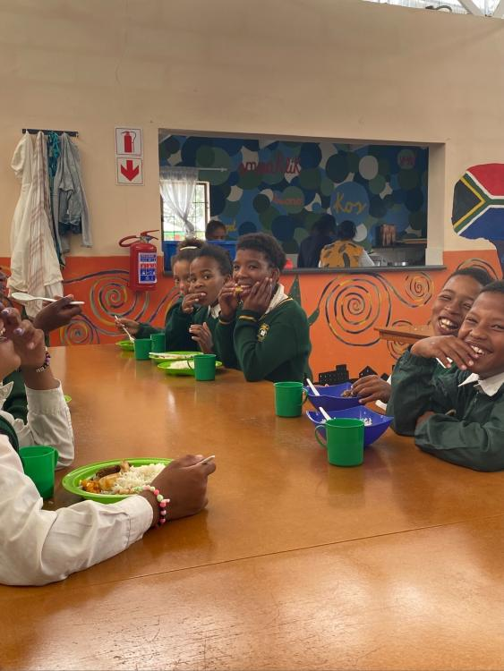

SPENDEN & ENGAGIEREN
Ihr Beitrag.
Eine Chance.
Eine Zukunft.
Mit Ihrer Spende unterstützen Sie junge Menschen dabei, Halt zu finden, ihre Stärken zu entdecken und den nächsten Schritt zu gehen.
Einmalig helfen oder regelmäßig begleiten: Sie entscheiden, wie Sie sich einbringen möchten.
DIREKT UNTERSTÜTZEN
Das Spendenkonto
Überweisen Sie Ihren Wunschbetrag oder richten Sie einen Dauerauftrag ein.
- Empfänger
- Chance Jugend Stiftung
- Bank
- Sparkasse Bamberg
- IBAN
- DE29 7705 0000 0302 3787 16
- BIC
- BYLADEM1SKB
Für eine regelmäßige Spende können Sie bei Ihrer Bank einen Dauerauftrag einrichten.

WAS IHRE UNTERSTÜTZUNG MÖGLICH MACHT
Halt im Alltag.
Perspektiven fürs Leben.
Eine warme Mahlzeit, verlässliche Begleitung, Bildung und Ausbildung: Unsere Projekte setzen an unterschiedlichen Stellen an. Sie helfen jungen Menschen, ihre Fähigkeiten zu entwickeln und ihr Leben zunehmend selbst zu gestalten.
Die Projekte kennenlernen ↗PERSÖNLICH KLÄREN
Ihre Spende.
Ihre Fragen.
Sie möchten ein bestimmtes Projekt fördern oder haben eine Frage zur Spendenbescheinigung? Sprechen Sie uns an.
Fragen zur Spende stellen ↗ZEIT, ERFAHRUNG UND KONTAKTE
Auch das kann
etwas bewegen.
Sie möchten Ihre Kenntnisse einbringen, ein Projekt begleiten oder eine eigene Förderidee verwirklichen? Gemeinsam klären wir, wo Ihr Beitrag sinnvoll ansetzen kann.
Engagement besprechen ↗Eine eigene Idee einbringen ↗